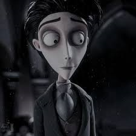
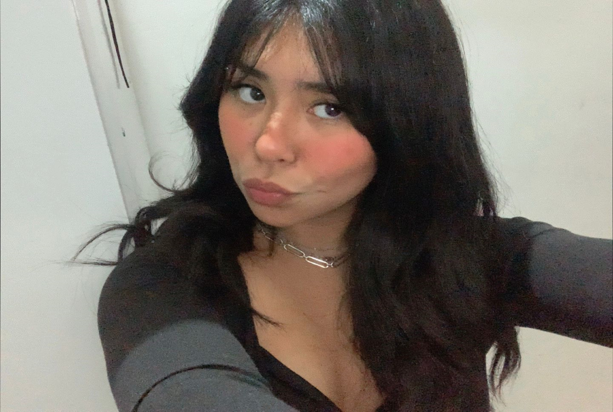
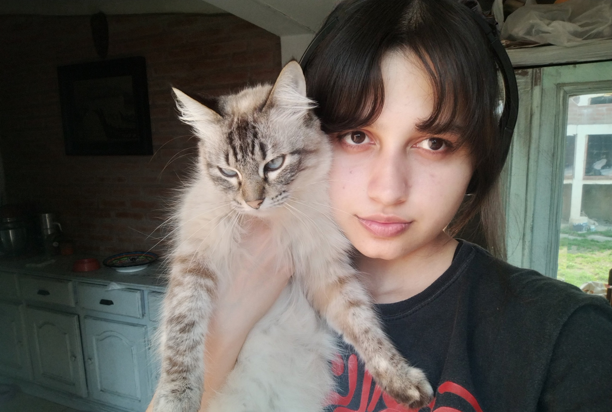

Víctor y Victoria, dos tímidos jóvenes que jamás se han visto, están apunto de contraer matrimonio por conveniencia, vinculando a las familias Van Dort, ricos, pero sin clase, con los Everglot, aristócratas arruinados. En el ensayo de boda, las cosas no salen bien. Víctor no recuerda bien sus votos y decide ir al bosque a practicar. Cuando termina de ensayar coloca el anillo de boda en la raíz de un árbol que acaba siendo el dedo de la novia cadáver. Víctor es arrastrado al país de los muertos, mientras Victoria espera en el país de los vivos.
Corpse Bride (conocida como El cadáver de la novia en Hispanoamérica y La novia cadáver de Tim Burton en España) es una película británico-estadounidense de comedia oscura musical animada en stop-motion dirigida por Mike Johnson y Tim Burton con un guión de John August, Caroline Thompson y Pamela Pettler basado en personajes creados por Burton y Carlos Grangel. Fues estrenada el 23 de septiembre del 2005 en Estados Unidos.
Personajes

Victor
“I would never marry you!” ―Victor to Emily
Víctor es un apuesto joven caballero, de cuerpo larguirucho y tez pálida.Él es el tímido, nervioso y algo torpe prometido de Victoria Everglot , y esposo accidental de Emily.
Nunca está muy seguro de sí mismo y tiende a tartamudear.
Maggot
“If I hadn't just been sitting in it, I would say that you'd lost your mind!”
―Maggot to Emily waiting for Victor in the woods.
Maggot es un gusano y habitante de la Tierra de los Muertos . También es uno de los amigos más cercanos de Emily (ya que vive dentro de ella).Maggot suele ofrecer consejos a Emily, aunque no siempre son bien recibidos
Emily
“I spent so long in the darkness, I'd almost forgotten how beautiful the moonlight is."―Emily upon returning to the Land of the Living
Emily es una joven fallecida amable, algo crédula y dulce. Fue una dama talentosa y rica en vida. Fue asesinada por su ex prometido Lord Barkis Bittern. Emily está dispuesta a dar todo su corazón a aquellos que le importan.
Proceso
Cuando empezamos este proyecto, después de charlar sobre lo que nos gustaba, tuvimos claro que queríamos basarnos en una película. La primera idea no nos convenció mucho, pero luego pensamos en El cadáver de la novia y nos dimos cuenta de que a las dos nos encanta por su estilo y lo increíble que es visualmente.
Decidimos repartirnos las tareas, pero siempre estábamos ayudándonos cuando algo no nos salía o no terminaba de gustarnos. Así fue como logramos darle vida a nuestras ideas, convirtiéndolas en la aventura gráfica y el juego que hoy podemos compartir.
Al principio, cuando empezamos con la aventura gráfica, estábamos un poco perdidas. Nos costó un poco aclarar las ideas, así que nos pusimos a organizar todo para que los finales y caminos tuvieran coherencia entre sí. Después de hacer el diagrama que pueden ver aquí abajo, nos metimos con las imágenes .Otro gran desafío. Conseguir que la IA nos diera imágenes que tuvieran sentido para cada pantalla y que todas siguieran un estilo similar no fue nada fácil. Pero al final lo logramos.
Luego vinieron los textos, luego de decidir que poner en cada pantalla, asegurándonos de que todo entre bien lo conseguimos. Por último, unir todo lo que teníamos y programarlo, a pesar de todos los desafíos, al final logramos tener la aventura gráfica que queríamos.
El proceso creativo del juego fue uno de los más difíciles. Teníamos muchas ideas, pero pocos conocimientos sobre cómo llevarlas a cabo. Al ser un juego basado en la aventura gráfica, las posibilidades eran infinitas. Decidir qué tipo de juego hacer fue complicado, pero finalmente nos decidimos por algo más sencillo: un juego de recolectar objetos buenos y evitar los malos.
Queríamos incluir a otro personaje importante de la película, Maggot, el gusano de Emily. Así que surgió la idea de que él fuera el protagonista y que su misión fuera preparar la boda perfecta para Víctor y Emily.
A la hora de desarrollar el juego, encontramos varios obstáculos, como el temporizador, pero después de revisar ejemplos, consultar con las comisiones y hacer muchas preguntas a ChatGPT, ¡lo logramos! Y así conseguimos que el juego funcione como queríamos.
¡Esperamos que lo disfruten! :)
Integrantes

Ada Rojas
Legajo 119129/0
¡Hola! Soy Adi, tengo 19 años y soy estudiante de Diseño Multimedial en la UNLP. Me gustan los animales y el diseño. Este año fue un gran desafío; aunque ya estaba algo familiarizada con el tema, fue una etapa llena de aprendizajes y descubrimientos muy interesantes.

Sofía Brizuela
Legajo 118977/0
¡Hola! Soy Sofi, tengo 20 años y estoy en mi primer año de la carrera de Diseño Multimedial. Me gustan mucho los videojuegos, la programación y los gatos! :)